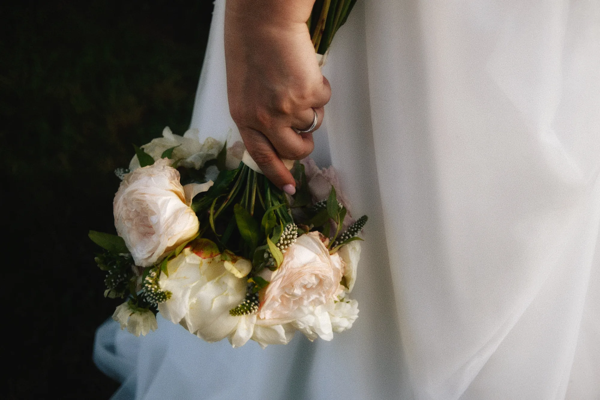

03 / Wedding · 2026
Heldin light
A small wedding story told through gesture, movement and the details held close.

Close / candid
Not only how it looked, but how the day moved and felt.
Quiet details sit beside loosened, almost dreamlike frames. The story stays intimate and leaves room for the atmosphere around the couple.
“The smallest gestures carry the day: a hand, a glance, a dress caught in motion.”
Next seriesPortrait →